The future shopfloor needs data platforms that are both scalable and inspectable.
Lukas Ott otluk@apache.org
Manufacturing needs more real-time data.
GMP requires trustworthy and inspectable records.
AI and analytics increase the demand for structured, contextualized data.
Legacy shopfloor architectures are often fragmented and opaque.
The future shopfloor needs data platforms that are both scalable and inspectable.
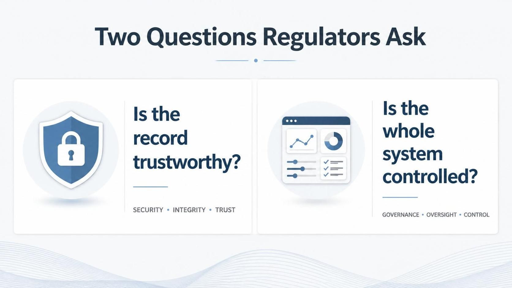
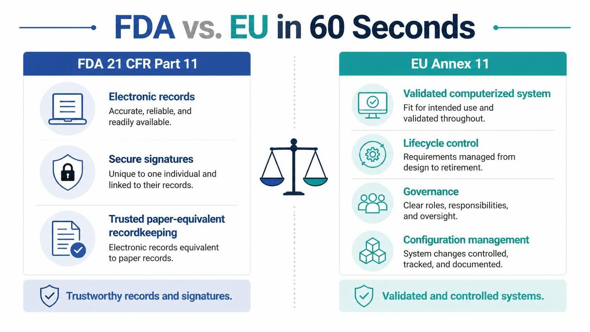
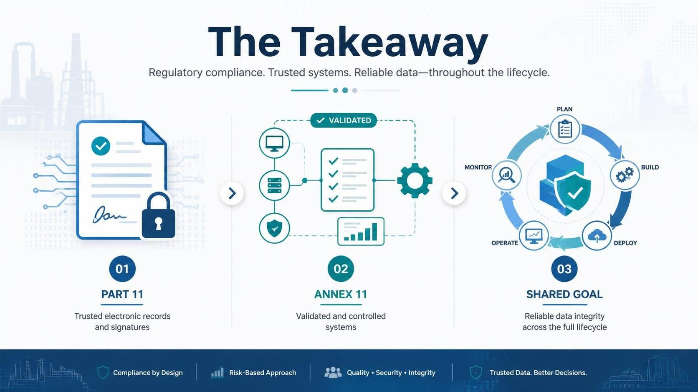
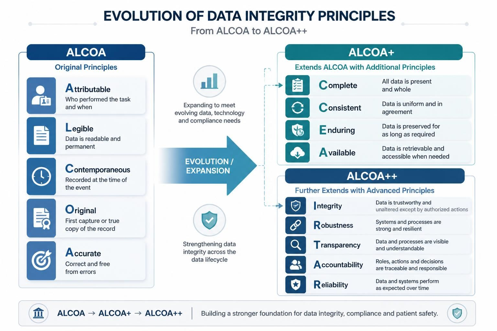
For IIoT, ALCOA++ is not a documentation checklist. It is an architecture requirement.
Attributable: Every reading is linked to a machine, sensor, gateway, service, and timestamp. | Contemporaneous: Data is captured immediately at the machine event. |
Original: Raw values are preserved before any transformation or aggregation. | Complete: Retries, gaps, corrections, and synchronization events remain traceable. |
Enduring: Records survive retention periods, infrastructure changes, and recovery scenarios. | Available: Authorized users can retrieve data at any time for operations, review, or inspection. |
Transparent: Processing logic, configuration, and data movement are auditable. | Accountable: System and user actions are tied to responsible identities. |
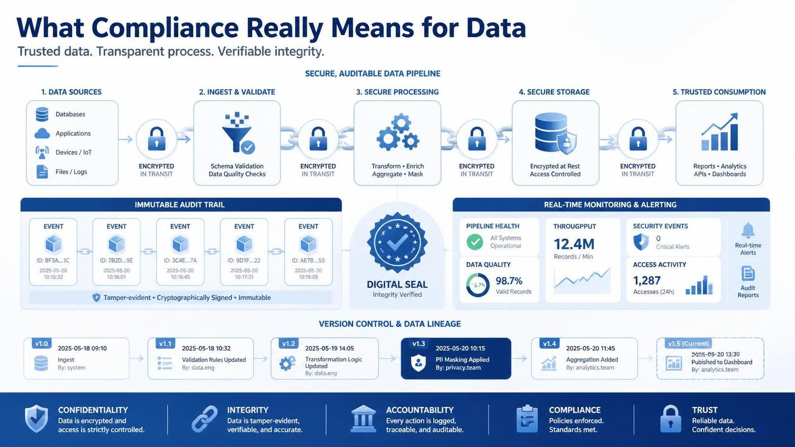
Network outage during production | Duplicate readings after retry |
Missing or inconsistent timestamps | Unauthorized data access |
Silent data loss during synchronization | Uncontrolled transformation logic |
Retention or backup failure | Configuration drift between environments |
A GMP-ready IIoT architecture must be designed for failure, not only for normal operation.
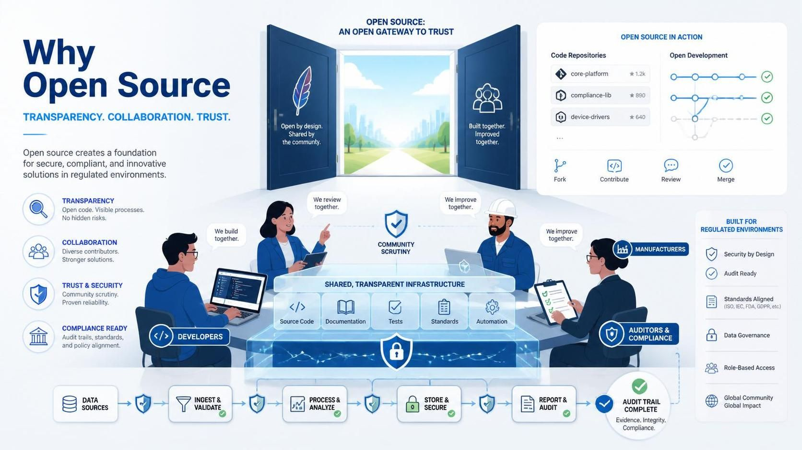
The software is not validated by default.
The implemented system must be qualified and validated.
Supplier and community governance still need assessment.
Security patching and dependency management must be controlled.
Documentation, testing, SOPs, and change control remain mandatory.
Open source is not a shortcut around GMP. It is a transparent foundation that can support validated architectures.
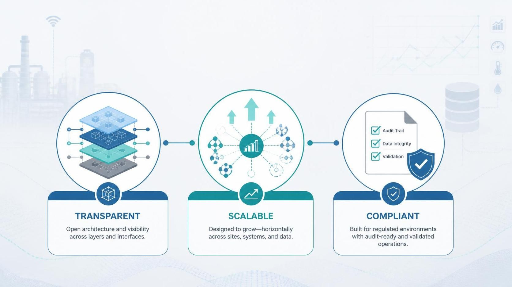
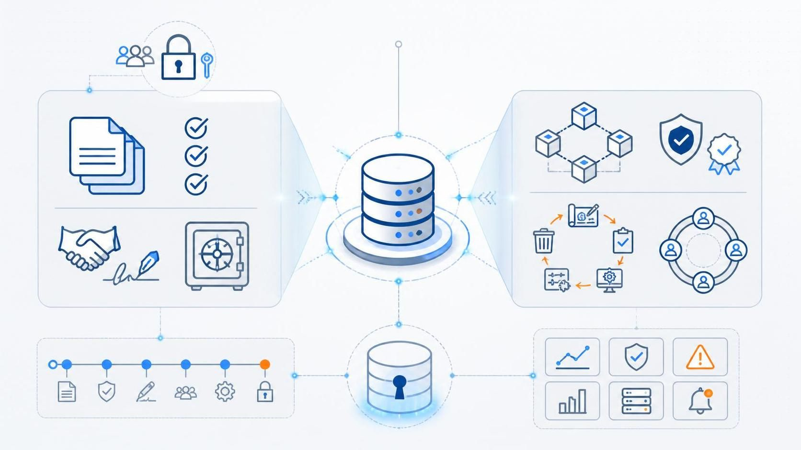
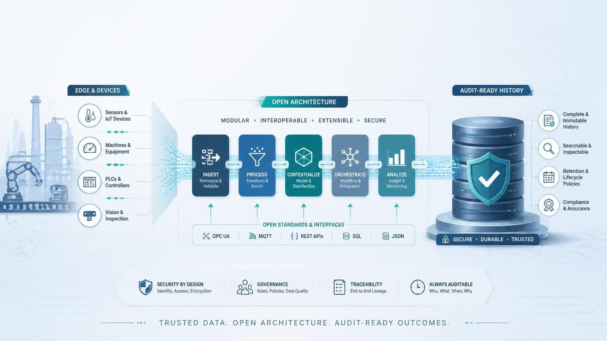
Capture high-frequency machine and sensor readings.
Buffer data locally when central connectivity is unavailable.
Synchronize data into a historian without duplicates.
Visualize current and historical data.
Support traceability, operational resilience, and inspection readiness.
The goal is not to validate a database in isolation. The goal is to validate the implemented system for its intended use.
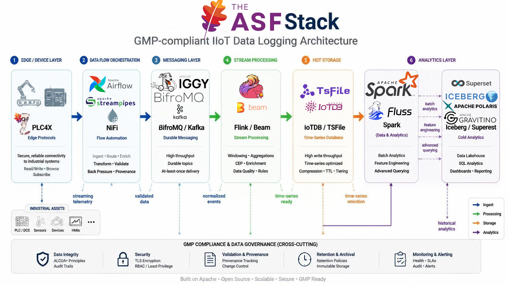
Optimized for high-frequency industrial time-series data.
Stores structured device and sensor measurements.
Supports integration with authentication, authorization, encryption, monitoring, and retention controls.
Can serve as the historian core inside a validated IIoT architecture.
Works together with controlled ingestion, metadata, logging, and validation processes.
Time-series file format optimized for efficient storage and query.
Supports append-oriented storage patterns.
Helps separate raw time-series history from downstream analytics.
Supports reproducibility and inspection when combined with controlled storage, access, and retention design.
Can be paired with analytical formats such as Apache Iceberg.
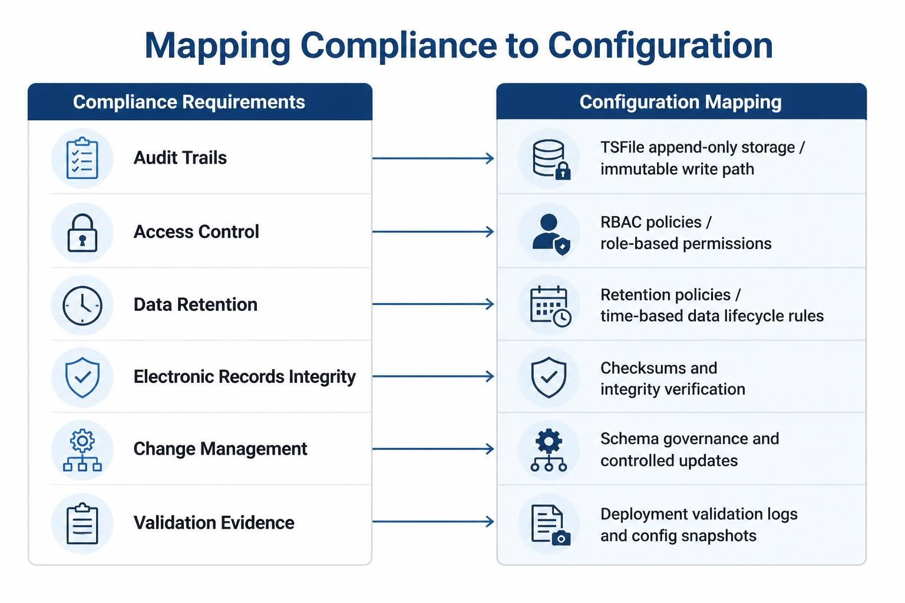
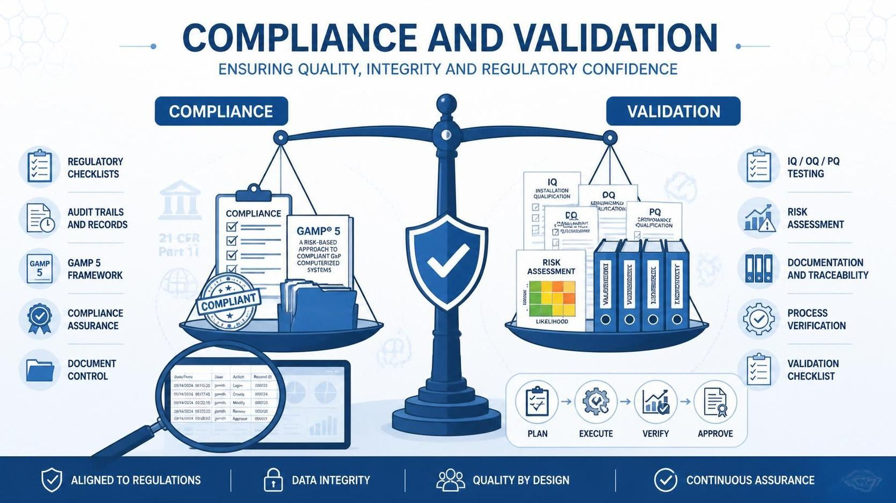
What is GMP-relevant?
What is the regulated record?
Which components create, modify, store, or display the record?
Which integrations are in scope?
Which users, services, and systems can access the data?
What is the intended use?
What is explicitly out of scope?
Intended Use: Define what the system is expected to do.
Risk Assessment: Identify patient, product quality, and data integrity risks.
User Requirements: Define business, quality, and operational requirements.
Design Specifications: Translate requirements into controlled architecture and configuration.
IQ / OQ / PQ: Prove installation, operation, and performance.
SOPs and Training: Ensure controlled and repeatable use.
Monitoring and Review: Verify ongoing compliant operation.
Change Control: Manage updates without breaking validated state.
| Test | What it proves | IIoT example |
|---|---|---|
IQ | The system is installed repeatably and correctly. | Correct versions, configuration, certificates, storage paths, deployment scripts. |
OQ | The system functions as specified. | RBAC, retention, backup, synchronization, failover, audit logging, monitoring. |
PQ | The system performs under realistic production conditions. | Peak sensor load, network outage, replay, idempotent sync, long-running ingestion. |
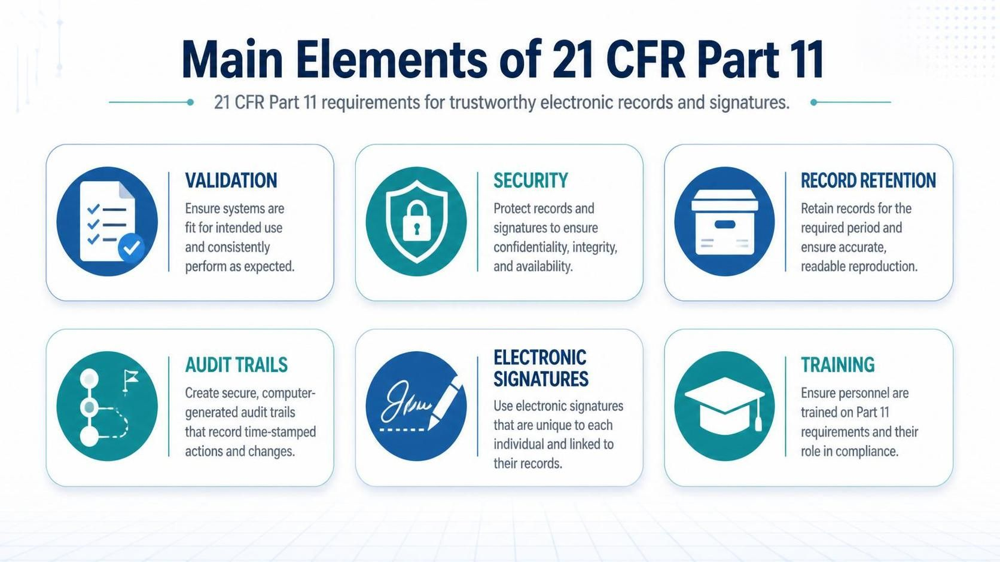
A production line continues generating readings.
The central historian is temporarily unavailable.
The local system continues accepting data.
Readings are buffered safely.
Synchronization resumes when connectivity returns.
Duplicate records are avoided through idempotent behavior.
Historical data becomes visible in Apache IoTDB.
The demo proves continuity, traceability, and recoverability under realistic shopfloor conditions.
Goal: show the path from ingestion to buffering to synchronization.
| Step | Action |
|---|---|
1 | Log in as |
2 | Send sample readings to |
3 | Open the dashboard and observe the local buffer chart. |
4 | Trigger |
5 | Verify that synchronized historical data appears in the IoTDB chart. |
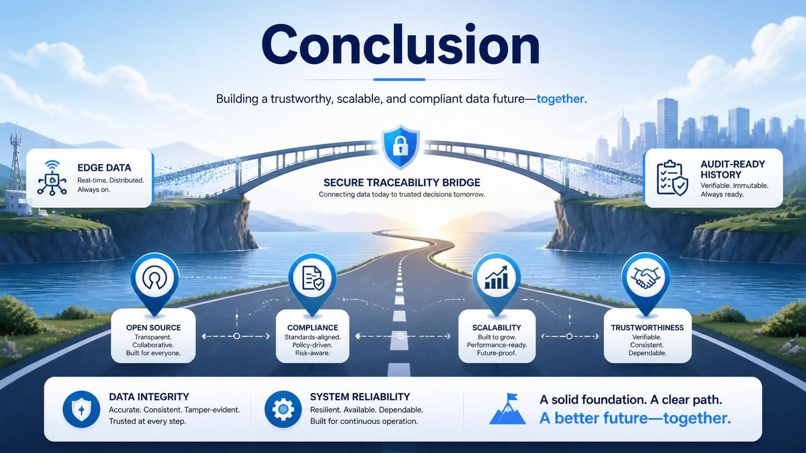
Regulated manufacturing does not just need more data.
It needs data that can be trusted, inspected, and preserved.
Apache IoTDB can serve as the historian core of a GMP-ready IIoT architecture.
Apache technologies provide modular building blocks from edge to analytics.
Validation depends on intended use, risk, evidence, procedures, and lifecycle control.
Open source supports transparency, scalability, and validatability.
Open source is not a shortcut around validation. It is a foundation for transparent, scalable, and inspectable manufacturing data platforms.
Thank you.
Projects:
Apache IoTDB: https://iotdb.apache.org/
Apache PLC4X: https://plc4x.apache.org/
Apache StreamPipes: https://streampipes.apache.org/
Contact:
Lukas Ott <otluk@apache.org>